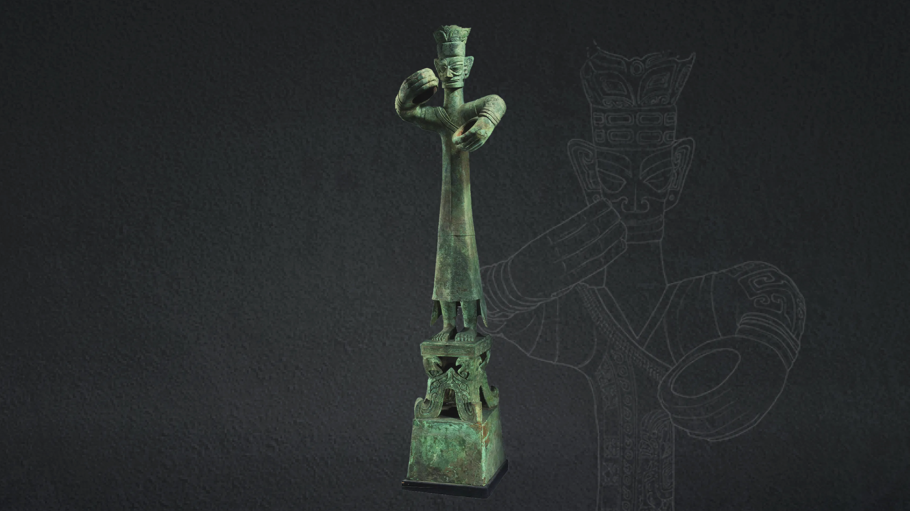
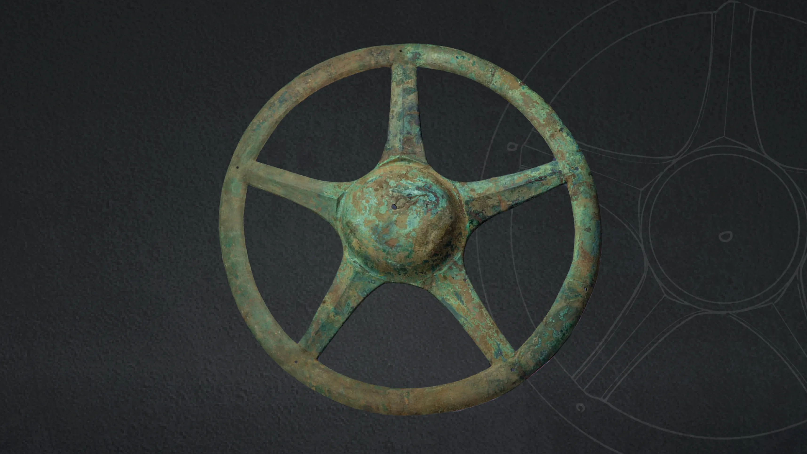
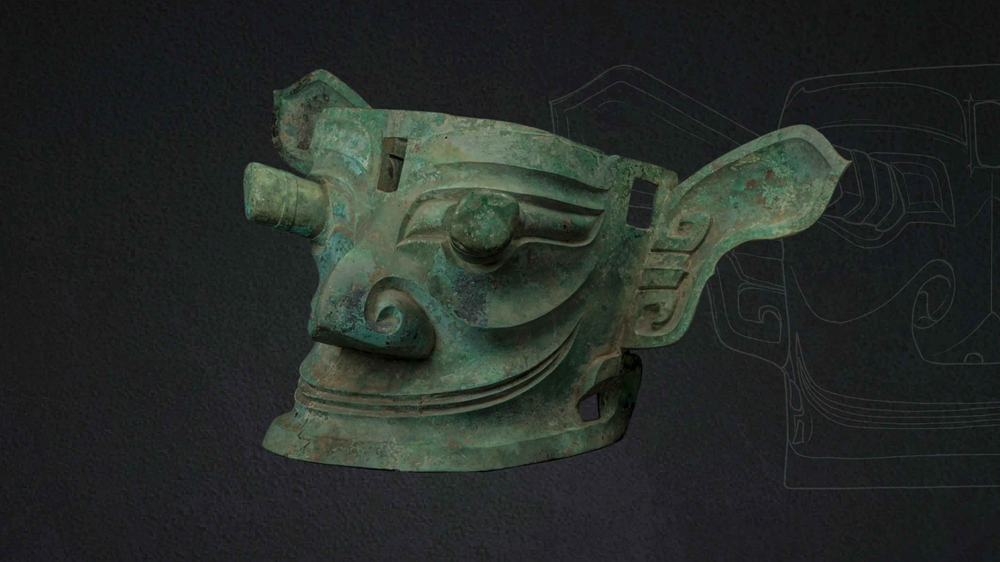
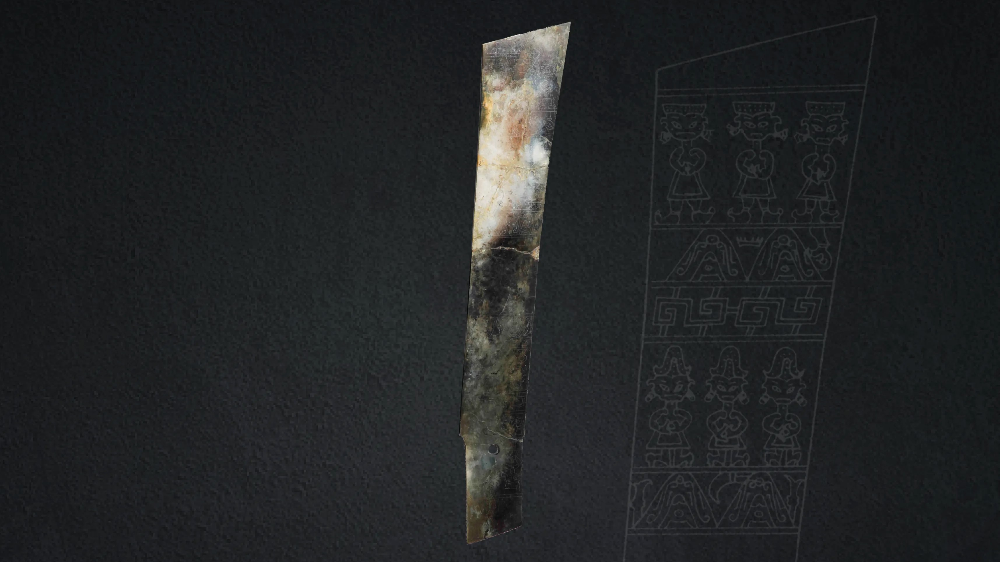
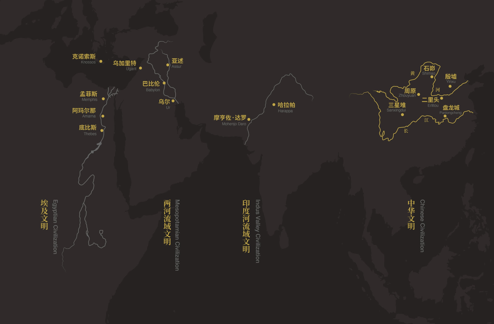
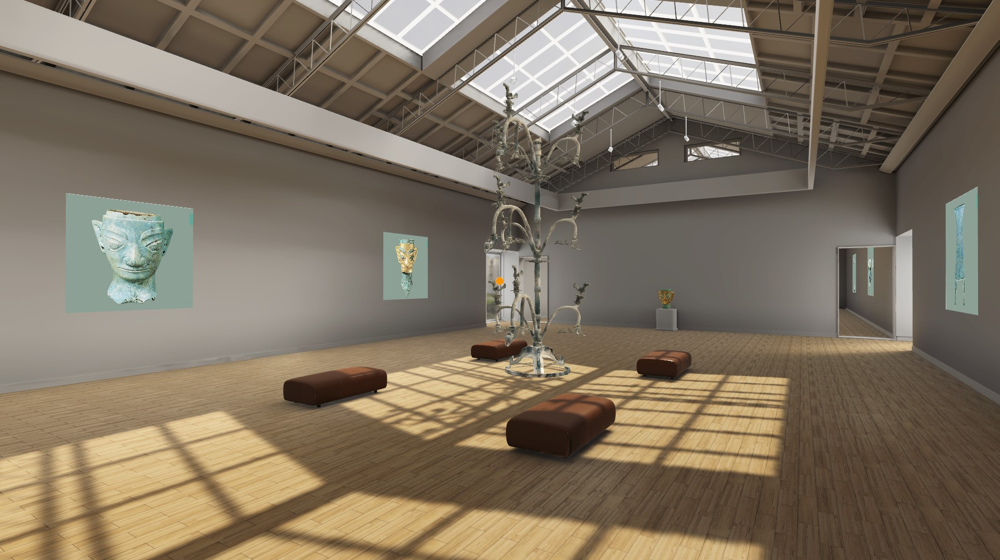

Our Exhibits
Permanent Relics

Bronze Standing Figure
Stand in awe of the larger-than-life bronze statues that once adorned Sanxingdui temples.

Bronze Sun Wheel
Explore and understand the common belief of the ancient Shu people in the early days - Sun Worship.

Bronze Masks
Discover the enigmatic bronze masks that have become synonymous with Sanxingdui culture.
Bronze Head
The gold foil bronze statue represented the highest status in society at that time.
Gold Artifacts
Explore the exquisite gold items that showcase the wealth and craftsmanship of ancient Shu.

Jade Carvings
View the intricate jade pieces that held both spiritual and aesthetic value in Sanxingdui.
Special Exhibits

Excavation Timeline
Journey through the history of Sanxingdui discoveries from 1929 to the present day.
Learn More

Virtual Exhibition Hall
Explore Sanxingdui's wonders from anywhere in the world through our immersive virtual tour.
Enter Virtual Hall